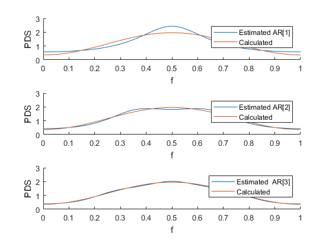

y_xx = [1.16 -.4 0 0];
YW_1 = 1.16;
YW_2 = [1.16 -.4;
-.4 1.16];
YW_3 = [1.16 -.4 0;
-.4 1.16 -.4;
0 -.4 1.16];
a_1 = YW_1^(-1) * transpose(-y_xx(2));
a_2 = YW_2^(-1) * transpose(-y_xx(2:3));
a_3 = YW_3^(-1) * transpose(-y_xx(2:4));
var_1 = sum([1 transpose(a_1)].* y_xx(1:2));
var_2 = sum([1 transpose(a_2)].* y_xx(1:3));
var_3 = sum([1 transpose(a_3)].* y_xx(1:4));
f = 0:1/1000:2*pi;
f_xx = 1.16 - 0.8*cos(2*pi*f);
f_xx_1 = (var_1^2)./(abs((1 + a_1*exp(-1i*2*pi*f))).^2);
f_xx_2 = (var_2^2)./(abs((1 + a_2(1)*exp(-1i*2*pi*f)+a_2(2)*exp(-1i*2*pi*f*2))).^2);
f_xx_3 = (var_3^2)./(abs((1 + a_3(1)*exp(-1i*2*pi*f)+a_3(2)*exp(-1i*2*pi*f*2)+a_3(3)*exp(-1i*2*pi*f*3))).^2);
subplot(3,1,1);
hold on;
plot(f, f_xx_1);
plot(f, f_xx);
xlabel('f');
ylabel('PDS');
legend('Estimated AR[1]', 'Calculated');
axis([0 1 0 3]);
subplot(3,1,2);
hold on;
plot(f, f_xx_2);
plot(f, f_xx);
xlabel('f');
ylabel('PDS');
legend('Estimated AR[2]', 'Calculated');
axis([0 1 0 3]);
subplot(3,1,3);
hold on;
plot(f, f_xx_3);
plot(f, f_xx);
xlabel('f');
ylabel('PDS');
legend('Estimated AR[3]', 'Calculated');
axis([0 1 0 3]);
